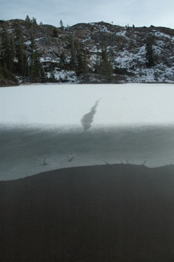

Upper Rock Lake Hike
A rare winter hike to Upper Rock Lake; January 17, 2012.
Usually there are several feet of snow here by this time of year, and the Bowman Lake Road is closed.
Very eerie sounds were coming from under the ice at Lower Lindsey Lake.

Snow striations on Upper Rock Lake.

Lower Rock Lake, viewed from the saddle above.
Nathan kicked at the ice along the shoreline of Lower Rock Lake...
...and made this long crack straight out toward the middle:

Other Hikes